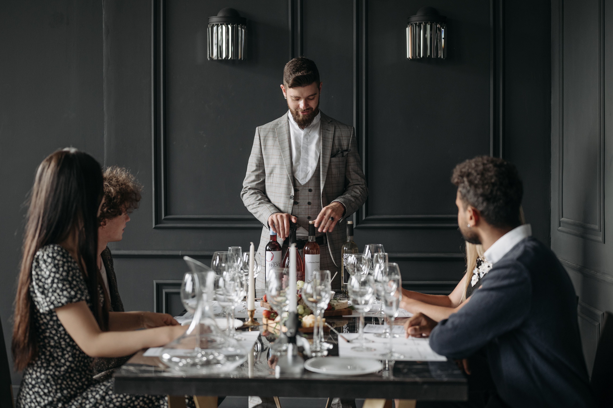

The Art of the Pour.
A refined introduction to the experience of discovering, tasting, and enjoying exceptional wines in an intimate, temperature-controlled tasting room setting.
250+
Curated Cellar Bottles



15+ Years
Sommelier Heritage
Inside Our Cellar
Our wine collection is purposefully curated rather than simply stocked. Every bottle on our shelves has been hand-selected for its distinct regional character, producer integrity, and sense of place.
Old World Selections
Historic estate reserves from Bordeaux, Burgundy, Piedmont, and Rioja.
New World Discoveries
Bold single-vineyard expressions from Napa Valley, Sonoma, and Oregon.
Limited Releases
Rare allocated bottles sourced directly from boutique artisanal producers.
Seasonal Discoveries
Fresh monthly sommelier picks highlighting small-batch & organic harvests.
Chosen With Knowledge.
Served With Purpose.
“Wine is never meant to feel intimidating. It is an evolving conversation between vineyard, climate, glass, and guest. Our role is to listen to your palate and guide your curiosity toward bottles that inspire memory.”

Good Wine Deserves Good Company.
Food and wine should elevate one another. Our culinary team prepares refined small plates designed specifically to pair with our rotating flight menu.
Cheese & Charcuterie
Aged Comté 24-month, Parmigiano-Reggiano, Prosciutto di Parma 18-month, wildflower honey, and sourdough crostini.
Seasonal Small Plates
Pan-seared duck breast crostini, roasted heirloom beets with whipped goat cheese, and black truffle arancini.
Artisan Tapas
Wild mushroom flatbreads, prime Wagyu carpaccio with capers, and marinated Mediterranean olives.
Dessert Pairings
Single-origin dark chocolate ganache, artisanal blue cheese with poached pears, and warm raspberry tarts.

The Decanting Ritual & Aeration
Great wines need breathing room. Our sommelier team follows strict temperature and decanting protocols to soften tannins and unlock subtle fruit and oak aromatics.
Cellar Preservation
Sourced directly from 55°F humidity-controlled vaults to preserve vintage freshness.
Controlled Oxygenation
Poured through fine mesh into hand-blown crystal decanters for optimal aeration.
Varietal Glassware Match
Served in varietal-specific Riedel Grand Cru bowls tailored to highlight bouquet nuances.
Voices of the Cellar.
Honored by international wine publications and cherished by guests seeking an unhurried, memorable tasting experience.
“Vinora offers one of the most thoughtfully curated European flight menus in the country. A masterclass in wine hospitality.”
“The cellar vault selection is breathtaking, seamlessly pairing rare allocations with house-cured charcuterie.”
“An intimate atmosphere where the Sommelier team treats every guest to a personalized, unhurried sensory journey.”
Your Table Is Waiting.
Whether visiting for a first tasting flight, a quiet evening glass, an intimate celebration, or a wine discovery with friends, our tasting room offers a curated sanctuary crafted for hospitality.
First-Time Tastings
Guided intro flights for newcomers looking to explore different grape varietals.
Quiet Evenings
Relaxed booth seating for intimate conversations over rare cellar pours.
Private Celebrations
Dedicated tasting room areas for birthdays, anniversaries, and corporate gatherings.